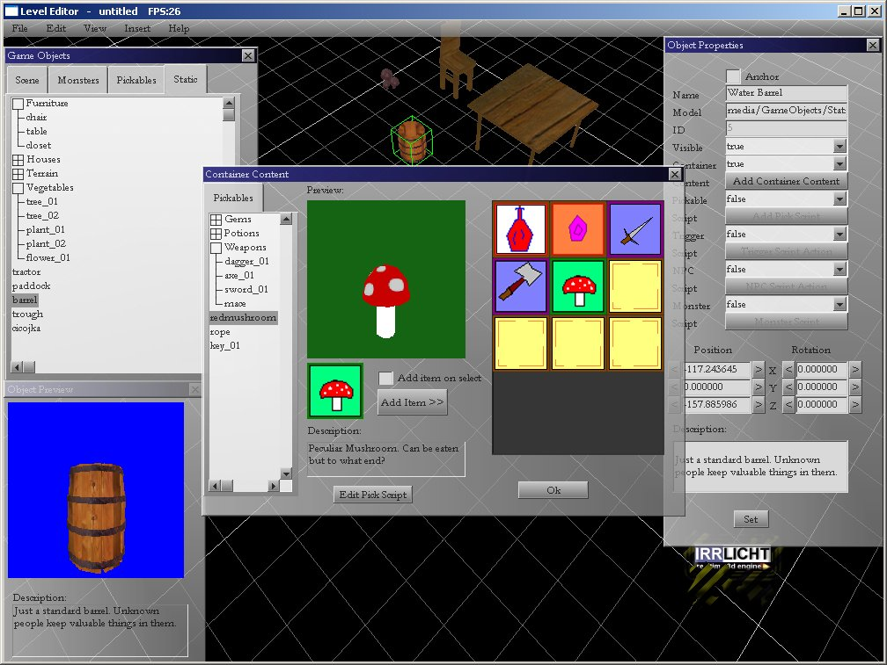

In this tutorial, we gonna make simple scene, then we'll add some items to container object.
Start Level Editor.
You should be comfortable with laying objects around by now, so layout a simple map.
Add barrel model from the Static tab. In the properties window click on the button
"Add Container Content" (make sure barrel is selected!).

In the popup window, select few items to add to the container.
Click Ok. Save the map.
In the game directory, open game_config.xml and change 'MapStart' attribute to point to your map.
Add your map to list of maps under 'Maps' tag like this: Level id="0" filename="mymap.map".
Start GameExample.
You should see your map loaded.
Walk the turtle character to the container and click on it.
Get the prescious items to you inventory! Try putting them back to container.
Advanced topic:
To understand how this feature works, check out container content xml files (cc_mapname_id.xml)
that are stored together with your map file. These are automatically generated files once you
add some content to container.When game opens the map (irr file) it checks if any of the nodes
are container objects. If they are, it searches for xml file describing their content.
File name contains ID of the container node, and ID of the map it belongs to.
Petar Bajic
MPE (C) All Rights Reserved
Homepage: www.mystic-peanut.com
July, 21 2008.
Index